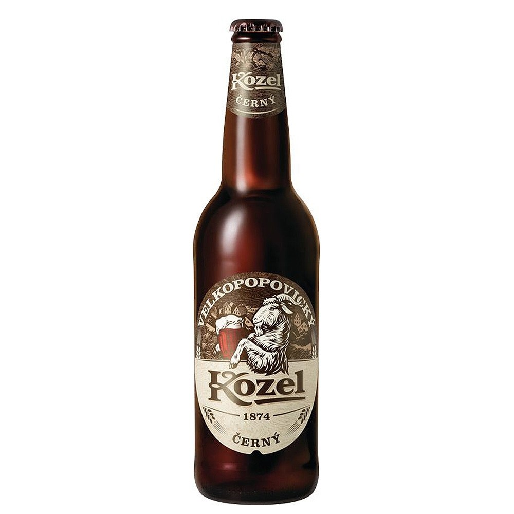

|
|
 |
Темное пиво
Темное пиво — это большая группа различных по крепости напитков
насыщенного темного цвета, от коричнево-бордового до практически черного.
Несмотря на разницу и индивидуальность каждого, есть у них общая черта —
присутствие во вкусе и аромате солодово-карамельных ноток обжаренного
зерна, иногда с шоколадно-кофейными и фруктовыми оттенками, а также бархатистое,
сладковатое послевкусие.
|